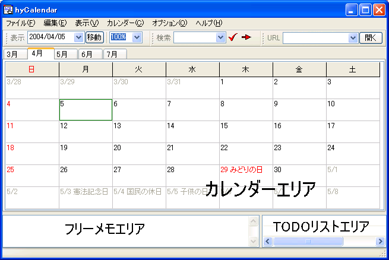
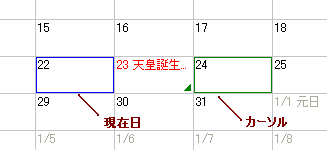
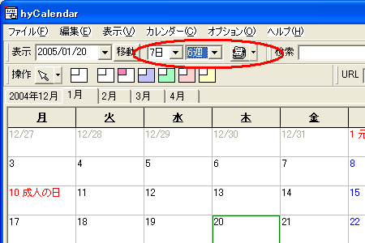
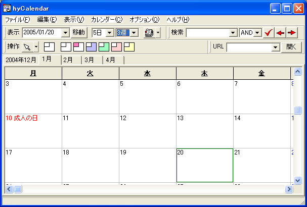
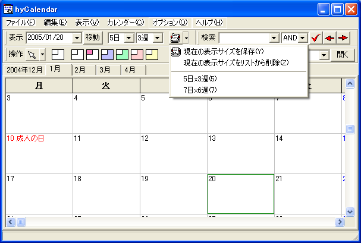

各種予定の記入方法: 日付メモ 期間予定 周期予定 TODO管理 フリーメモ 日付の着色
hyCalendar のウィンドウは，以下のように３つのエリアから構成されています．
中央部が [カレンダーエリア]，下の空白部分が [フリーメモエリア] です． また，右下部分に[TODOリストエリア]があります． [カレンダーエリア] には日付単位でのメモを， [フリーメモエリア] には日付とは関係のないメモを， [TODOリストエリア] には任意のチェック項目を記入します． ウィンドウの大きさ，各エリアのサイズは調整可能です．
[カレンダーエリア] の中は，枠線付きの日が 存在していることが分かると思います．
カレンダーは標準では日曜始まりです． 月曜始まりにしたい場合は，設定ダイアログの [カレンダー表示]タブから設定を変更します．
標準では，青色の枠で囲まれた日が現在の日付を， 緑色の枠で囲まれた日がマウスで選択された日付を示します． カーソルの色は，設定ダイアログの [表示色]タブから変更することができます．
目的の日へカーソルを移動するには，次のような方法があります．
| 操作 | 対応する動作 |
|---|---|
| カーソルキーの← | 一日前へ移動（週の先頭なら移動しない．オプションで前の週へ移動するか選択可能．） |
| カーソルキーの→ | 一日後へ移動（週の終わりなら移動しない．オプションで次の週へ移動するか選択可能．） |
| Home, または CTRL + ← | その週の先頭（左端）へ移動 |
| End, または CTRL + → | その週の末尾（右端）へ移動 |
| カーソルキーの↑ | 一週間前へ移動（一番上端なら先月のタブを開く．オプションで上へのスクロールが選択可能．） |
| カーソルキーの↓ | 一週間後へ移動（一番下端なら翌月のタブを開く．オプションで下へのスクロールが選択可能．） |
| Page Up | 四週間前へ移動（上端に到達したら先月のタブを開く．オプションで上へのスクロールが選択可能．） |
| Page Down | 四週間後へ移動（下端に到達したら翌月のタブを開く．オプションで下へのスクロールが選択可能．） |
| CTRL + Page Up | 前のタブへ移動 |
| CTRL + Page Down | 次のタブへ移動 |
| メニュー[カレンダー]-[今日の予定へ移動] | 現在日へ移動 |
| CTRL + T | 現在日へ移動（メニュー[今日の予定へ移動]のショートカット） |
| 表示ツールバーで日付を入力して[移動]またはEnter | 入力した日への移動 |
| マウスホイールによるスクロール | 一週間単位で上下へ移動 |
表示されていない日付に移動する場合，自動でタブが開きます． 不要なタブは，タブを右クリックして [このタブを閉じる] を選択することで閉じることができます．
開いているタブの状態を保存するかどうかは，設定ダイアログの[状態の自動保存]タブにある [プログラム終了時に開いているタブを保存する] 設定によって決まります．
カレンダーは，標準状態ではウィンドウサイズに１ヶ月分（七曜六週）の 予定が表示されるようになっています． 現在の表示サイズは， 表示ツールバーの日付移動ボタンの右側に表示されています．
１画面サイズに表示したい週の数（行数）および曜日の数（列数）を リストから選択すると，表示サイズが変化します． 週の数については，数値を直接記入することもできます．
表示サイズの右側にあるカレンダーマークのボタンを押下することで， 現在の表示サイズを保存することができます． ボタン右側のプルダウンをクリックすると 保存した表示サイズのリストが表示され， 選択した表示サイズを復元することができます． 保存した表示サイズのリストは，hyCalendar の終了時に設定ファイルに書き込まれ， 次回以降の起動でも有効となります．
通常，変更した表示縮尺（拡大率）は カレンダー全体の表示に適用され，hyCalendar 終了時に破棄されます． １ヶ月ごとに異なる縮尺を適用したい場合は， 設定ダイアログの[カレンダー表示]タブから設定を行います． また，終了時の表示縮尺をそのまま保存しておきたい場合は[状態の自動保存]タブから設定を行います．
hyCalendar は，以下の情報を取り扱うことができます．
各日付ごとの個別の予定です．日付をダブルクリックして （あるいはカーソルをその日付に移動して Enter キーを押して）記入します． 装飾文字列による着色などに対応しています． また，カット＆ペーストの対象です．
開始日付と終了日付を指定した一定の期間に設定する予定です． 日付を右クリックし，「期間予定の追加...」から追加することができます． 矢印と直線によって，期間を明示します．
「毎年１月１日」「毎月第２月曜」のように， 特定の条件を満たした日付に対して予定を表示することができます． [カレンダー]-[周期予定の編集]メニューから専用の編集ダイアログを使用して作成します．
TODO記入エリア上（あるいはTODO編集ダイアログ）上で 追加・編集することができます． TODOが日付を含んでいる場合，カレンダーのその日にもTODOの内容を 表示させることができます．
特にどの日付にも属さない予定などを書くための欄です． 記入した日付やURLがハイパーリンクされることを除けば， 特別な機能は提供しません．
日付に任意の色を着色することで，特定の日を目立たせることが可能です．